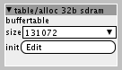
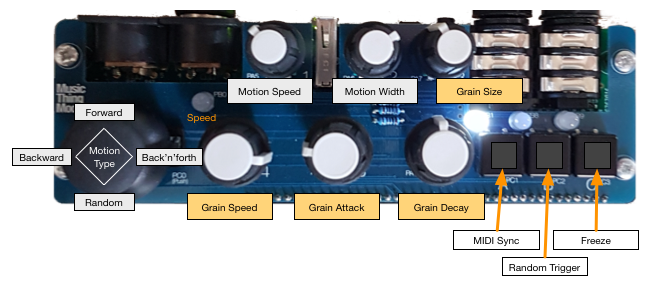

patches/cpwitz/effects/grain/grain-mill.axp
Grain-mill is a granular delay/destroyer with variable grain playback position, variable grain size and envelope, optional MIDI sync and a freezable buffer. It's designed as a send or insert effect and therefore takes the input from audio in left. I also made a version working with the AxoControl board for a handy stand-alone effect (see below).
Here are the controls:
midi-sync
Turns on MIDI clock synchronisation. If it is turned on, it waits for MIDI clock pulses. Caution: As long as no MIDI clock comes in, the internal-speed is used. When a MIDI clock is received, triggering is synced to the clock at the selected note value divisions (see below).
random
When turned on, triggers are sent randomly (about 50% probability). Syncs to MIDI, too.
freeze
This toggle freezes the recording buffer, meaning that no incoming audio is processed, but the same buffer is granulised over and over.
clock-source/internal-speed
Sets the grain trigger speed when not MIDI synced.
clock-source/MIDI clock div
For MIDI syncing you can select the desired note value for grains to be triggered. The labels to the right of the radio buttons show the resulting note value.
The red LED is blinking every time a grain is triggered.
Motion
Motion is the movement of the position a grain is taken from the recording buffer every time a grain is triggered. With the motion controls you can build some kind of reverse or speed-up/slow-down effects.
motion-speed
Sets the LFO speed of the selected motion.
motion-amount
Sets the amount of the motion within the recording buffer. 0 means no motion at all (weird sound) and 64 moves through the whole buffer.
motion-type
You can select one of four motion types:
- "Saw down" is moving backwards through the recording buffer starting at the oldest sample and moving back to the newest. Good for reverse-like effects.
- "Saw up" moves from the newest to the oldest samples and can create some kind of speed-up or slow-down effect.
- "Triangle" is moving back and forth.
- And finally "random" takes every grain from a random position.
These settings are very much fun to experiment with spoken audio inputs or music.
grain-size
The size of a grain. Can go from very long to nasty short snippets of the incoming audio. A grain snippet is looped as long as the envelope for a grain is active.
grain-attack/grain-decay
The attack/decay volume envelope for a grain. Longer attack and shorter decay for a reverse-like effect. Short attack and long decay for delay mayhem. And no attack and short decay for decent stuttering.
feedback
Sets the feedback amount of grains back into the recording buffer. Lots of feedback with a long decay setting can lead to infinite feedback noise. Beware: If the recording buffer is freezed, feedback doesn't have an effect.
stereo-width
With stereo-width turned up, each grain is output alternately to the left and right stereo channel.
dry-level
With this dial you can mix in the incoming live signal to the output (e.g. if you use it as insert effect device).
Recording (delay) buffer size

The patch has a table/alloc object "buffertable", which defines the recording buffer's size. You can play with the size setting to make the overall delay shorter or longer.
patches/cpwitz/effects/grain/grain-mill-axocontrol.axp
This is the version of grain-mill working with the AxoControl pot-PCB. The controls are mapped like this:

Feedback and stereo-width can't be controlled with the AxoControl. You can hook up for example MIDI CC numbers to control them.
Hope you like it! Feedback (even in grains) welcome! 


 . I rather like "one knob per function" interfaces.
. I rather like "one knob per function" interfaces.


{kind=link}
{kind=link}